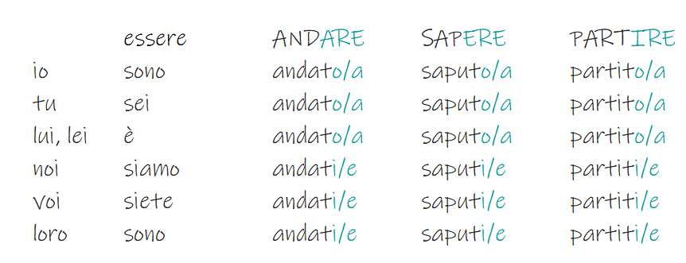

Passato Prossimo
werkwoorden
Gebruik
De passato prossimo wordt gebruikt om te vertellen over handelingen in het verleden. Hij heeft betrekking op afgesloten gebeurtenissen uit het verleden. Hij wordt gevormd door een hulpwerkwoord (avere of essere) gevolgd door het voltooid deelwoord.
Bij gebruik van avere wordt het voltooid deelwoord niet vervoegd. Bij gebruik van essere wordt het voltooid deelwoord vervoegd naar geslacht en aantal
Hulpwerkwoord avere
Hulpwerkwoord essere

Voorbeeldzinnen
| italiaans | nederlands |
|---|---|
| È morto per qualcosa che ha mangiato. | Hij stierf aan iets dat hij at. |
| Maria ha prenotato una camera. | Maria heeft een kamer geboekt. |
| Hanno visto un film di Fellini | Ze hebben een Fellini-film gezien |
| il prezzo della frutta è ribassato di oltre il 20% | de prijs van fruit wordt met meer dan 20% verlaagd |
| L’estate scorsa ho visitato Napoli. | Afgelopen zomer bezocht ik Napels. |
| Marco ha mangiato la mela | Marco at de appel op |
| Ieri abbiamo mangiato la lasagna. | Gisteren aten we lasagne. |
| Per un attimo ho creduto saremmo morti. | Even dacht ik dat we dood gingen. |
| Ieri sono andato al lavoro in bicicletta. | Gisteren fietste ik naar mijn werk. |
| Stamattina mi sono svegliata alle sette. | Vanmorgen werd ik om zeven uur wakker. |
| Ho mangiato una pizza. | Ik heb een pizza gegeten. |
| il supermercato qui vicino ha ribassato i prezzi | de nabijgelegen supermarkt heeft zijn prijzen verlaagd |
| Devi vedere il panino che ha mangiato ieri. | Je moet de boterham zien die hij gisteren at. |
| Non gli ho creduto su nulla. | Ik geloofde hem nergens over. |
| Poi nel pomeriggio siamo partiti per gli Stati Uniti. | Toen vertrokken we in de middag naar de Verenigde Staten. |
Onregelmatig voltooid deelwoord
Meerdere werkwoorden hebben een onregelmatig deelwoord. De belangrijkste zijn:
| Italiaans | Deelwoord |
|---|---|
| spegnere | spento |
| venire | venuto |
| dire | detto |
| discutere | discusso |
| perdere | perso |
| decidere | deciso |
| rimanere | rimasto |
| vivere | vissuto |
| chiedere | chiesto |
| dividere | diviso |
| nascere | nato |
| fare | fatto |
| scegliere | scelto |
| bere | bevuto |
| soffrire | sofferto |
| offendere | offeso |
| scendere | sceso |
| accendere | acceso |
| mettere | messo |
| leggere | letto |
| stare | stato |
| ridere | riso |
| piangere | pianto |
| tradurre | tradotto |
| cuocere | cotto |
| scrivere | scritto |
| vincere | vinto |
| rispondere | risposto |
| vedere | visto |
| chiudere | chiuso |
| morire | morto |
| correre | corso |
| rompere | rotto |
| aprire | aperto |
| prendere | preso |